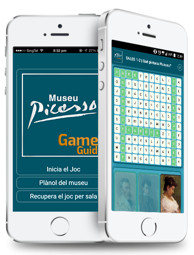
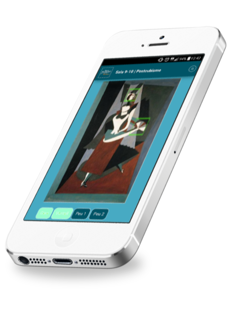
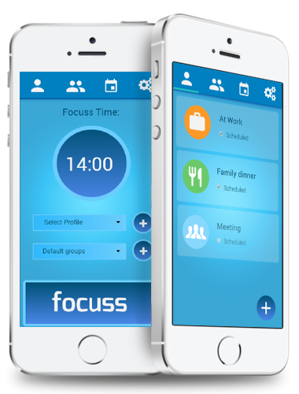
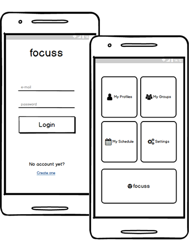
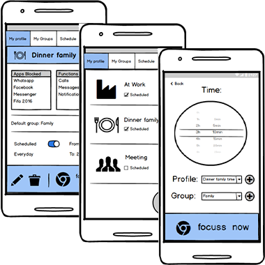
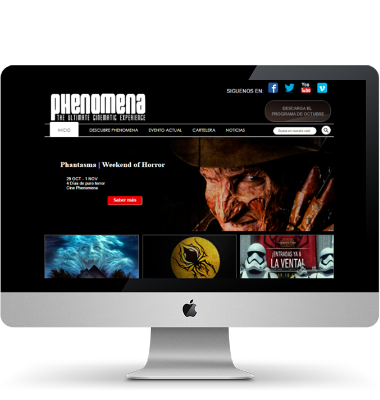
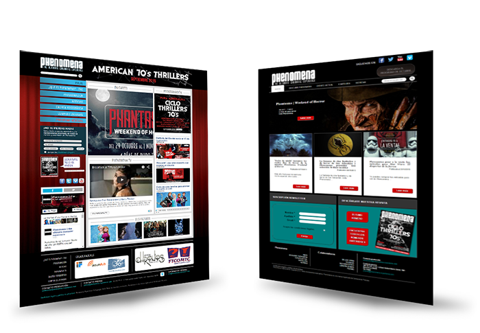

Museum Kids Game Guide
Hybrid App
UX & UI Design / Front-end developement
Kids are the forgotten visitors of the museums. Thanks to this App they can enjoy their museum visit and learn while playing.
Problem
Kids do not get profit of museum visits because the content is not adapted to them, they do not even understand it but they neither enjoy it.
Solution
Museu Picasso GameGuide is an Hybrid App that embeds multimedia content and combines it with games that are directly related with the content and the paintings exhibited. Games are simple, the interface is easy to use, with drag & drop and tap game interactions.
Focuss App
Mobile Prototype
UX & UI Design
Productive App that disables apps installed on your phone and functionalities in order to let you focuss in other stuff.
Research and User testing - User centred design
The first step of the making process was to do a research about the market, the apps that provided similar functionalities but also to set which was the target and who could take profit of this application.
After that, the users were interviewed about their needs and expectations. This was a significant part of the process because we could set their priorities and offer them what they really needed.
 Wireframe
To do a mockup was the beginning of the designing process so as to do a user centred design and prioritize the user experience over the design. The prototype was tested and the feedback made us on one hand, do little changes and on the other hand, verify that our propositions were mostly on the right direction.
The final prototype
- Fixed menu
- Easy to navigate
- Microinteractions and advanced animations/transition
- Profiles and Groups sections for the user to manage them and set its preferences and personalization
- Material design principles
- Funnel architecture
PHENOMENA CINEMA NEW DESIGN
Desktop Web
UX & UI Design / Front-end developement
Phenomena Cinema web redesign and definition so that it better represents their brand and better serves their users.
Problems
The content was unorganized and the items had no sense., the sidebar menu left little space for the main content, there were no calls to actions, falses affordances, among others.
Solution
Horizontal navigation menú on the top with clear active page and along with the social media links, new wireframe, with better defined boxes, visible CTAs, consistent design.